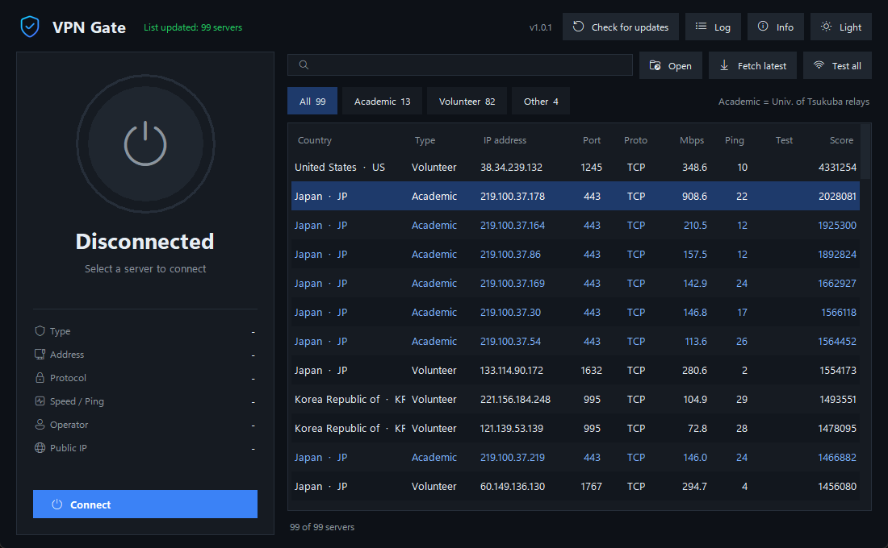
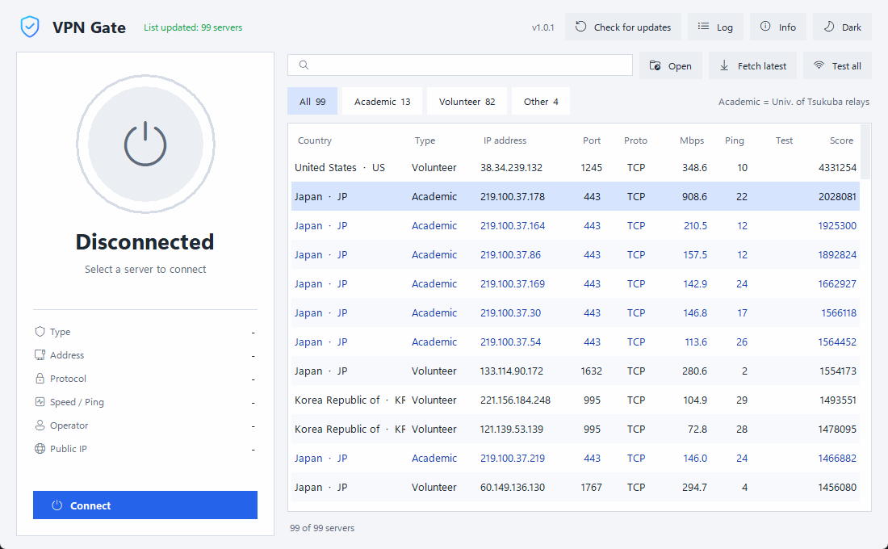

Free VPN servers,
one click away.
A clean Windows app for connecting to public VPN Gate servers. Pick a server from the live list and connect. No accounts, no setup files.


Everything you need, nothing you don't
Built to make the VPN Gate network easy to use, with a modern interface and sensible defaults.
One-click connect
Select a server and press Connect. Live details show the server, protocol, speed, your new public IP and a connection timer.
Searchable server list
Sort by speed, ping or score, filter by country or type, and test which servers are reachable before connecting.
Academic server badges
Servers are labelled Academic, Volunteer or Other, so you can spot the official research relays at a glance.
Always fresh
The list refreshes on startup and every 30 minutes. The last list is saved so the app still opens offline.
Notifications
Windows notifications tell you when you connect, disconnect, lose the connection or a server fails.
Built-in updates
The app checks for new versions and installs them in one click, then restarts itself.
Dark and light themes
Switch themes from the header (version 1.0.1 and later). Your choice is remembered.
Know who runs the server
Every server on VPN Gate is run by someone. The Type column makes that visible.
Official VPN Gate research servers run by the University of Tsukuba. Shown in blue.
Personal computers shared by individuals around the world. The majority of the list.
Servers from named third-party operators.
The label is a best guess from the operator name and hostname VPN Gate publishes. It is not a guarantee of who runs a server or what they log.
Get started in a minute
No Python, no configuration files.
- Download the installerGrab
VPNGate-Setupfrom the latest release and run it. - Add the VPN adapter (first time only)If this PC has never used OpenVPN, install the free OpenVPN Community once. It provides the network adapter driver.
- Start the app and approve the promptWindows asks for Administrator rights because creating a VPN connection requires them.
- Pick a server and connectChoose a fast server (high Mbps, low ping) and click Connect. The ring turns green when you're protected.
Requirements
| Operating system | Windows 10 or 11, 64-bit |
|---|---|
| Permissions | Administrator approval when the app starts |
| Network adapter | OpenVPN TAP / DCO adapter (installed with OpenVPN Community) |
| Python | Not required. The app includes everything it needs. |
| Internet | Needed to fetch servers and connect. A saved server list is used offline. |
Questions
Is it really free?
Yes. The app is free and the servers come from the free VPN Gate public network.
Is it safe to use?
VPN Gate servers are run by volunteers, and operators may be able to see or log your traffic. Avoid signing in to sensitive accounts such as banking over them. The app itself doesn't collect any data about you.
A connection fails or times out. What now?
Many free servers are offline or blocked on some networks. Use Test all to see which servers respond, then try another one.
Windows says the app is not recognised.
The installer is not code-signed, so Windows SmartScreen may warn on first run. Choose More info, then Run anyway, if you trust the download.
What does the app contact on the internet?
vpngate.net for the server list, GitHub to check for updates, and api.ipify.org once after you connect, to show your new public IP.
How do updates work?
On startup and once a day the app checks GitHub for a newer release. When one exists, an update screen offers a one-click install and the app restarts by itself.